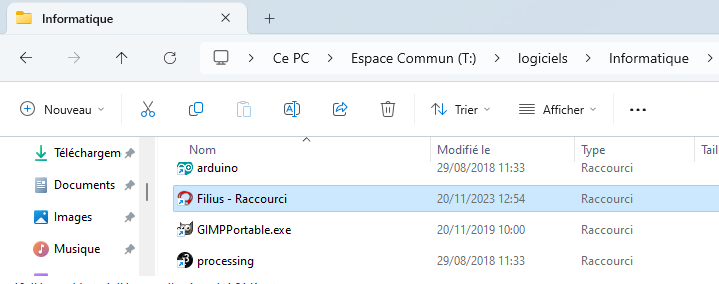

Architecture d'un réseau⚓︎

Notion de réseau
- En général, un réseau est un ensemble de nœuds reliés entre eux par des liens.
- Un réseau informatique est un réseau dont les nœuds sont des équipements informatiques reliés par des liens de différente nature: câbles, fibre optique, liaisons satellites, ondes radio, ....
- Une interface est le point de raccordement entre un lien et un nœud: elle peut être matérielle (carte réseau) ou logicielle.
- Un protocole est un ensemble de règles permettant d'établir, de mener et de terminer une communication entre deux équipements du réseau.
1- Construction d'un réseau⚓︎
Dans cette activité, nous allons simuler un réseau local avec le logiciel Filius (Ce PC > Espace Commun > logiciels > Informatique > Filius (raccourci)).

Sauvegarde
- Ouvrir le logiciel Filius en faisant attention au choix de la langue.
- Puis enregistrer tout de suite le document dans votre dossier SNT sous le nom
simulation_reseau.flset penser à enregistrer régulièrement votre travail.
Filius
Le logiciel Filius comporte deux modes:

Mode conception
Mode simulation
-
En mode conception, construire le sous-réseau ci-dessous, en cochant «Utiliser l'adresse IP comme nom» et en respectant les adresses IP indiquées sur le schéma.

Deux adresses pour un ordinateur?
-
Adresse MAC : Chaque ordinateur sur le réseau dispose d'une adresse MAC, qui est une valeur unique attribuée à sa carte réseau (Ethernet, Wifi, 4G, 5G, ...) lors de sa fabrication en usine.
Cette adresse est codée sur 48 bits, présentés sous la forme de 6 octets en hexadécimal, ici
1F:5E:60:F0:15:23.Les trois premiers octets correspondent au code du fabricant. Un site comme https://www.macvendorlookup.com/ vous permet de retrouver le fabricant d'une adresse MAC quelconque.
-
Adresse IP: Une machine possède en général une adresse IP par interface et contrairement à l'adresse MAC, elle peut être modifiée lors du paramétrage du réseau... Nous utiliserons la version IPv4 (sur 4 octets) bien que cette version est peu à peu remplacée par la version IPv6 (sur... 6 octets, car 4 ne suffiront bientôt plus).
-
-
Passer en mode simulation, puis cliquer sur l'ordinateur
192.168.0.1. - Cliquer sur "Installation des logiciels", sélectionner le logiciel "Ligne de commande" et l'installer en le déplaçant à gauche. Appliquer les modifications.
-
Ouvrir le logiciel "Ligne de commande" et réaliser un
pingde la machine192.168.0.1vers la machine192.168.0.3en tapantping 192.168.0.3en ligne de commande.Ping?
pingest une commande qui permet de tester si une autre machine est accessible dans un réseau IP.Ici la connexion est possible, puisque les deux ordinateurs d'adresses IP
192.168.0.1et192.168.0.3sont dans un même réseau, reliés par un switch.
Rôle du switch
Le rôle d'un switch est de distribuer un message au bon destinataire, en analysant la trame reçue. Lors d'un branchement d'un nouvel ordinateur sur le switch, celui-ci récupère son adresse MAC, ce qui lui permet de trier les messages.

2- Un deuxième réseau⚓︎
-
Renommer le switch en "SwitchA" et créer un deuxième réseau de trois machines d'adresses IP
192.168.1.1,192.168.1.2et192.168.1.3avec un "SwitchB", qu'il faut relier au "SwitchA par un câble. -
Tester un
pingde192.168.0.1vers192.168.1.2. Que se passe-t-il? -
Renommer la machine
192.168.1.2en192.168.0.16et retenter leping. Que se passe-t-il?
Masque de sous-réseau
Lorsqu'une machine A veut envoyer un message à une machine B, elle doit déterminer si cette machine :
- appartient au même sous-réseau : auquel cas le message est envoyé directement via un ou plusieurs switchs.
- n'appartient pas au même sous-réseau : auquel cas le message doit d'abord transiter par un routeur (voir plus loin).
La notion de sous-réseau obéit à des règles numériques sur les adresses IP, il ne suffit pas de relier les ordinateurs entre eux pour qu'ils fassent partie du même sous-réseau...
C'est le masque de sous-réseau (tout simplement "Masque" dans Filius, netmask en anglais) qui permet de déterminer quelles adresses font partie d'un même réseau.
-
Le masque par défaut de Filius est
255.255.255.0, qui s'écrit en binaire :11111111.11111111.11111111.00000000. -
Les 24 premiers bits égaux à 1 signifient que pour appartenir à un même sous-réseau, les adresses IP doivent commencer (à gauche) par les 24 mêmes premiers bits (c'est-à-dire les mêmes 3 premiers octets). Autrement dit, l'ordinateur d'adresse IP
192.168.0.1est dans le même sous-réseau que tous ceux d'adresses IP commençant par192.168.0. -
Comme c'est le cas de
192.168.0.3, lepinga eu un résultat positif. Mais192.168.1.2ne fait pas partie du même sous-réseau, donc le résultat dupinga été négatif. En changeant son adresse IP en192.168.0.16, on l'a remis dans le même sous-réseau. -
Ici donc, les 24 premiers bits définissent l'adresse du réseau, complétée par des 0 pour faire 32 bits :
192.168.0.0 /24(le/24indique le masque). -
Les 8 derniers bits peuvent donc différer selon les machines du sous-réseau, c'est le numéro de la machine dans le réseau (adresse hôte). On peut donc avoir 256 machines dans ce réseau (ce n'est pas tout à fait le cas car l'adresse finissant par 0 est réservée pour le réseau et celle finissant par 255 est aussi réservée, donc en fait on peut en avoir 254).
-
Une autre valeur de masque peut être
255.255.248.0, qui s'écrit en binaire :11111111.11111111.11111000.00000000. -
On noterait alors l'adresse du sous-réseau :
192.168.0.0 /21. -
Deux machines appartiennent alors au même sous-réseau si elles partagent les 21 premiers bits de leur adresse IP. Il reste alors 11 bits pour l'adresse hôte, on pourrait donc brancher \(2^{11} - 2 = 2046\) machines dans ce sous-réseau.
-
Dans ce cas-là, le
pingentre192.168.0.1et192.168.1.2aurait donné un résultat positif car les écritures respectives de ces adresses en binaire sont11000000.10101000.00000|000.00000001et11000000.10101000.00000|001.00000010: elles ont bien les mêmes 21 premiers bits.
3- Utilisation et rôle du routeur⚓︎
La solution initiale (relier les deux switchs par un cable pour unifier les deux sous-réseaux) n'est pas viable à l'échelle d'un réseau planétaire.
Pour que les machines de deux réseaux différents puissent être connectées, on va utiliser un dispositif équipé de deux cartes réseaux, situé à cheval entre les deux sous-réseaux. Cet équipement de réseau est appelé routeur ou passerelle.
Routage
Les 3 étapes du routage :
- Lorsque qu'une machine A veut envoyer un message à une machine B, elle va tout d'abord vérifier si cette machine appartient à son réseau local. si c'est le cas, le message est envoyé par l'intermédiaire du switch qui relie les deux machines.
- Si la machine B n'est pas trouvée sur le réseau local de la machine A, le message va être acheminé vers le routeur, par l'intermédiaire de son adresse de passerelle (qui est bien une adresse appartenant au sous-réseau de A).
- De là, le routeur va regarder si la machine B appartient au deuxième sous-réseau auquel il est connecté. Si c'est le cas, le message est distribué, sinon, le routeur va donner le message à un autre routeur auquel il est connecté et va le charger de distribuer ce message : c'est le procédé complexe du routage (voir vidéo du cours).
Dans l'exemple suivant, où le masque est 255.255.255.0, l'adresse 172.16.52.3 n'est pas dans le sous-réseau de 192.168.0.1. Le message va donc transiter par le routeur.

- Supprimer le câble (clic-droit dessus) entre le SwitchA et le SwitchB.
- Ajouter un routeur entre le SwitchA et le SwitchB.
- Configurer le routeur :
- L'interface reliée au Switch A doit avoir une adresse du sous-réseau A (idem pour le réseau B). On donne souvent une adresse finissant par
254, qui est en quelque sorte la dernière adresse du réseau (en effet l'adresse en255est appelée adresse de broadcast, utilisée pour «pinger» en une seule fois l'intégralité d'un sous-réseau). Pour le réseau A, on donnera donc192.168.0.254. - Dans l'onglet général, sélectionner « Routage automatique ».
- Ainsi configuré notre routeur peut jouer le rôle de passerelle entre les deux sous-réseaux.
- L'interface reliée au Switch A doit avoir une adresse du sous-réseau A (idem pour le réseau B). On donne souvent une adresse finissant par
-
Tester un ping entre
192.168.0.1et192.168.1.2¿Que pasa?
Cela ne marche pas. La carte réseau refuse d'envoyer les paquets car elle ne sait pas où les envoyer. Il faut donc dire à chaque machine qu'une passerelle est maintenant disponible pour pouvoir sortir de son propre sous-réseau. Il faut donc aller sur la machine
192.168.0.1et lui donner l'adresse de sa passerelle... -
Renseigner les adresses de passerelle sur les deux machines
192.168.0.1et192.168.1.2(c'est-à-dire l'adresse IP de l'interface du routeur). - Tester à nouveau le ping.
- Effectuer un traceroute entre
192.168.0.1et192.168.1.2(tapertraceroute 192.168.1.2dans le logiciel "Ligne de commande" sur la machine192.168.0.1): on y voit le nombre de sauts nécessaires entre les deux machines.
Cas d'un réseau domestique
Chez vous, la box de votre opérateur joue simultanément le rôle de switch et de routeur :
- switch car elle répartit la connexion entre les différents dispositifs (ordinateurs branchés en ethernet, smartphone en wifi, tv connectée...)
- routeur car elle fait le lien entre ce sous-réseau domestique (les appareils de votre maison) et le réseau internet.

Essayez chez vous de récupérer l'adresse IP locale, le masque de sous-réseau ainsi que la passerelle par défaut, à l'aide d'une commande ipconfig sous Windows.
4- Serveur DNS⚓︎
Domain Name System
Lors d'une utilisation classique d'un navigateur web, c'est une url mémorisable (un nom de domaine) qui s'affiche, et non une adresse IP : on retient en effet plus facilement https://www.google.com/ que http://142.250.179.67 , qui renvoient pourtant à la même adresse.
La machine qui assure ce rôle d'annuaire entre les serveurs web et leur adresse IP s'appelle un serveur DNS. Il permet de récupérer l'adresse IP correspondant à un nom de domaine. Pour pouvoir indexer la totalité des sites internet, son rôle est structuré de manière hiérarchique. Vous pouvez des détails ici.

- Connecter un ordinateur au SwitchB:
- d'adresse IP
192.168.1.30, - préciser sa passerelle,
- en mode simulation, installer dessus un Serveur web et le démarrer (cliquer dessus puis sur "Démarrer").
- d'adresse IP
- Sur la machine
192.168.0.1, installer un Navigateur Web. En tapant dans la barre d'adresse l'adresse IP du Serveur web, la page d'accueil de Filius doit s'afficher. Sinon, vérifier les configurations (adresses IP, de passerelle). - Rajouter un serveur DNS connecté au SwitchA, qui n'aura dans son annuaire d'un seul site. Il faut pour cela raccorder une nouvelle machine (mais une machine déjà sur le réseau aurait très bien pu jouer ce rôle), et installer dessus un serveur DNS (ne pas oublier de le démarrer).
- Sur ce serveur DNS, associer le nom de domaine
www.vivelansi.frà l'adresse IP192.168.1.30. -
De retour sur la machine
192.168.0.1, spécifier maintenant l'adresse du serveur DNS: -
Depuis le navigateur web de la machine
192.168.0.1, le sitehttp://www.vivelansi.frdoit maintenant être accessible.
Sauvegarde
Enregistrez le document dans votre dossier SNT (par exemple sous le nom simulation_reseau.fls), nous en aurons besoin dans le TP Écrire une page Web avec HTML/CSS.